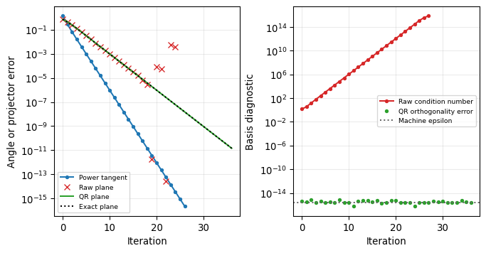

Given \(A\in\mathbb F^{n\times n}\), with \(\mathbb F=\mathbb R\) or \(\mathbb C\), seek \(v\ne0\) and \(\lambda\) such that \(Av=\lambda v\). If \(A\) has a million rows and we want just one eigenpair, what operation should we ask the matrix to perform? Forming the coefficients of \(\det(tI-A)\) and finding all its roots introduces a potentially ill-conditioned polynomial problem, does work for the entire spectrum, and still leaves us to find \(v\). In contrast, a single sparse product \(Av\) costs work proportional to the number of stored entries plus the vector dimensions. Sometimes a routine applying \(A\) is all we have.
Session 7 used factorizations to solve \(Ax=b\). In Session 8, a stationary iteration propagated the solution error as \(e^{(k)}=B^ke^{(0)}\). Convergence for every start required \(\rho(B)<1\). Here we deliberately retain a component. Even when every component of \(A^kv\) shrinks, its direction can reveal an eigenvector. The decisive quantity compares two rates of shrinkage or growth.
Study route (90 minutes). Spend 20 minutes on the single-vector derivation and diagnostics, 25 on invariant subspaces and the block proof, and 15 on the experiment and seminar connection. Reserve 30 minutes for the exercises, including checking your solutions.
10.2 What survives repeated multiplication?
Use the spectral theorem from Session 5. For Hermitian \(A=A^*\), write \(A=Q\Lambda Q^*\), where \(Q=[q_1,\ldots,q_n]\) is unitary and \(\Lambda\) is real diagonal. The star denotes conjugate transpose. Normalize the start to unit length. Orthogonal expansion (Session 2) gives \(v^{(0)}=\sum_i c_iq_i\) with \(c_i=q_i^*v^{(0)}\). Since each application multiplies \(q_i\) by \(\lambda_i\), induction gives
\[
A^kv^{(0)}=\sum_{i=1}^n c_i\lambda_i^k q_i.
\]
Order by magnitude, \(|\lambda_1|>|\lambda_2|\ge\cdots\ge|\lambda_n|\), and assume \(c_1\ne0\). Factoring out the largest weight gives
Each unwanted coefficient divided by the wanted coefficient tends to zero. The prefactor can be huge, tiny, or alternate in sign. We can discard its magnitude after each product because multiplying an input by a nonzero scalar preserves the output line whenever the output is nonzero.
Check for a zero product before dividing. It means the current vector lies in the kernel. Under the stated gap and overlap assumptions the wanted coefficient survives every finite step in exact arithmetic. By induction \(v^{(k)}=A^kv^{(0)}/\|A^kv^{(0)}\|_2\). Normalization limits accumulation of extreme scales across steps. The implementation needs one product per update and never forms \(A^k\).
The direction error and its rate
The acute angle \(\theta_k\) between two lines satisfies \(\cos\theta_k=|q_1^*v^{(k)}|\). The absolute value identifies unit representatives that differ by a sign or a complex phase. With \(P_1=q_1q_1^*\), Session 3 gives the tangent as the length perpendicular to the target divided by the length parallel to it. Taking these lengths before normalization cancels a common factor.
Power convergence theorem. For an orthonormal eigenbasis, a strict magnitude gap at the first eigenvalue, and nonzero initial overlap, this bound implies convergence of the line. A smaller ratio means fewer steps for the same guaranteed angular reduction. The absolute magnitude gap \(g=|\lambda_1|-|\lambda_2|\) has the units of \(A\). The factor \(1-g/|\lambda_1|\) is dimensionless and unchanged by scaling \(A\) by a nonzero scalar. A nearly orthogonal start can have a large \(\tan\theta_0\). Missing slow modes can make convergence faster than the bound.
The normalized vector approaches the moving representative \((\lambda_1/|\lambda_1|)^k(c_1/|c_1|)q_1\) in the sense that their difference tends to zero. A negative dominant eigenvalue alternates the sign. For a complex normal matrix the same proof uses a unitary eigenbasis, and a nonreal dominant eigenvalue rotates the phase. In all these cases the orthogonal projector onto the line has a single limit.
Worked example 1 — rotate into eigencoordinates
Take \(A=\begin{pmatrix}3&1\\1&3\end{pmatrix}\) and \(v^{(0)}=e_1\). Its orthonormal eigenvectors are \(q_1=(1,1)^T/\sqrt2\) and \(q_2=(1,-1)^T/\sqrt2\), with eigenvalues \(4\) and \(2\). Thus \(e_1=(q_1+q_2)/\sqrt2\) and \(A^ke_1=(4^kq_1+2^kq_2)/\sqrt2\). Three applications in the original coordinates give
For \((x,y)^T\) the ratio of the two eigenbasis coefficients in magnitude is \(|x-y|/|x+y|\). Across the four vectors it is \(1,1/2,1/4,1/8\). Here the tangent bound is exact. In ordinary coordinates the entries are becoming equal because the difference direction is being suppressed.
Worked example 2 — where selection fails
Let \(A=\operatorname{diag}(2,-2,1)\) and \(v^{(0)}=(1,1,0)^T/\sqrt2\). The first two weights have equal magnitude. The lines alternate between the spans of \((1,1,0)^T\) and \((1,-1,0)^T\), which are perpendicular. Both lie in the same invariant plane. Equal magnitudes of different eigenvalues can therefore prevent even line convergence. For a repeated copy of the same dominant eigenvalue, the whole dominant eigenspace receives one common weight. With a gap below it and nonzero projection onto it, the limiting line is the line of that projection and depends on the start.
If the dominant component is absent, its coefficient stays zero. Starting Example 1 at \(q_2\) gives the eigenpair for \(2\) forever. For a general diagonalizable matrix the expansion uses coefficients in a possibly ill-conditioned eigenvector basis, and the orthogonal sum-of-squares proof no longer applies. With defective matrices even the pure-power expansion can fail. For example a Jordan block \(\begin{pmatrix}1&1\\0&1\end{pmatrix}\) has upper-right entry \(k\) in its \(k\)th power.
10.3 Estimating and checking an eigenpair
For \(v\ne0\) define the Rayleigh quotient \(\rho_A(v)=v^*Av/(v^*v)\). It is the coefficient of the orthogonal projection of \(Av\) onto \(v\). Hence \(r=Av-\rho_A(v)v\) satisfies \(v^*r=0\), and \(r=0\) precisely for an eigenvector. If \(Av=\lambda v\), substitution gives \(\rho_A(v)=\lambda\), including its sign. In a loop, reuse the product \(Av\) to evaluate the quotient and residual for the current iterate.
In Example 1, \(A(5,3)^T=(18,14)^T\), so \(\rho_A(v^{(2)})=132/34=66/17\). The exact value is \(4\). More generally, for a unit vector \(v=\sum_i a_iq_i\) the Hermitian quotient is \(\sum_i |a_i|^2\lambda_i\). Therefore \(|\rho_A(v)-\lambda_1|\le\max_i|\lambda_i-\lambda_1|\sin^2\theta\). A good direction can give an even more accurate eigenvalue.
As in Session 6, a small residual needs a scale and an interpretation. For unit \(v\), \(\|r\|_2^2=\sum_i|a_i|^2|\lambda_i-\rho_A(v)|^2\). Thus some eigenvalue lies within \(\|r\|_2\) of the quotient. In a tight cluster, a mixture of well-separated directions can have a small residual because their eigenvalues are close. Even a zero residual can identify a different eigenpair from the one sought. For scale-independent monitoring one can compare \(\|r\|_2\) with a tolerance times \(\|A\|_2\|v\|_2\) or an available operator scale.
10.4 Which object should a block approximate?
A subspace \(U\) is invariant under \(A\) if \(A(U)\subseteq U\). Once a vector is in \(U\), repeated products stay there. An eigenline is the one-dimensional case. Any span of eigenvectors is invariant by linearity. By contrast the line through \(e_1\) in Example 1 leaves itself on the first multiplication. An invariant subspace can contain very few eigenvectors: the entire plane of the Jordan block above is invariant, but its only eigenline is the first coordinate axis.
For Hermitian \(A\), an invariant \(U\) also has invariant orthogonal complement: if \(x\perp U\), then \(u^*Ax=(Au)^*x=0\) for every \(u\in U\). The restrictions are Hermitian and admit orthonormal eigenbases. In particular a group of eigenvalues identifies a spectral subspace. When eigenvalues inside the group coincide, individual basis vectors are nonunique. A gap to the outside can still distinguish the group cleanly. This is a reason to ask an eigensolver for a subspace.
Start with \(p\) independent columns, \(X_0\in\mathbb F^{n\times p}\), \(1\le p<n\). The raw block iteration is \(X_{k+1}=AX_k\), hence \(X_k=A^kX_0\). Its geometric iterate is \(\mathcal S_k=\operatorname{range}(X_k)\). Right multiplication by any invertible \(p\times p\) matrix changes the coordinates of a basis, preserving its span. This is the block analogue of choosing a different length for a vector. It gives us freedom to choose a numerically favorable basis at every step.
Why separate column normalizations are insufficient
Let \(A=\operatorname{diag}(8,2,1)\) and start with columns \(e_1+e_2\) and \(e_1-e_2\). After \(k\) steps the columns are \(8^ke_1\pm2^ke_2\). For every finite \(k\) their sum and difference recover \(e_1\) and \(e_2\) up to nonzero factors. The subspace is already exactly the desired plane. Nevertheless the cosine between the columns is \((8^{2k}-2^{2k})/(8^{2k}+2^{2k})\), tending to one. Normalizing each column leaves this angle unchanged.
The two nonzero singular values are \(\sqrt2\,8^k\) and \(\sqrt2\,2^k\) (compute \(X_kX_k^*\)). Thus \(\kappa_2(X_k)=4^k\), also after independent column normalization in this example since the two norms agree. In exact arithmetic there are still two independent directions. In floating point, a perturbation of order machine precision times the large singular value can swamp the small one. Extreme overall scaling introduces a further risk of overflow or underflow. The task for orthogonalization is to represent the second direction while it is still resolved.
Orthogonal subspace iteration
Take a reduced QR factorization of the starting block and use its orthonormal factor \(Q_0\). Repeat
\[
Y_{k+1}=AQ_k,\qquad Y_{k+1}=Q_{k+1}R_{k+1}.
\]
Session 4 supplies the reduced QR with \(Q_{k+1}^*Q_{k+1}=I_p\) and upper triangular \(R_{k+1}\). At full column rank \(R_{k+1}\) is invertible, so \(Q_{k+1}=Y_{k+1}R_{k+1}^{-1}\) proves equality of the ranges. This identity is a proof, not an instruction to form an inverse. Induction now gives \(\operatorname{range}(Q_k)=\operatorname{range}(A^kX_0)\). Multiplication advances the plane. QR assigns it coordinates in which all singular values of the basis are one. Householder QR provides this change of basis reliably for a resolved block. If the product loses rank, an orthonormal completion returned by a QR routine can contain directions outside the product range. It cannot recover missing information.
Worked example 3 — a plane moves, QR represents it
Use \[
A=\begin{pmatrix}3&1&0\\1&3&0\\0&0&1\end{pmatrix},
\qquad Q_0=[e_1,\,(e_2+e_3)/\sqrt2].
\] Example 1 identifies the wanted eigenvalues \(4,2\) in the first coordinate plane. The initial columns project to independent vectors there. The product columns are \(y_1=(3,1,0)^T\) and \(y_2=(1,3,1)^T/\sqrt2\). Subtract the component of \(y_2\) along \(y_1\) to get \((-4,12,5)^T/(5\sqrt2)\). Normalizing gives \[
Q_1=\left[\frac{(3,1,0)^T}{\sqrt{10}},\,
\frac{(-4,12,5)^T}{\sqrt{185}}\right],
\qquad
R_1=\begin{pmatrix}\sqrt{10}&6/\sqrt{20}\\0&\sqrt{185}/(5\sqrt2)\end{pmatrix}.
\] The dot product numerator is \(-12+12=0\) and the squared lengths before normalization are \(10\) and \(185\). Thus \(Q_1^TQ_1=I_2\). To see what happened to the plane, write it as a height \(z\) over \((x,y)\). Initially \(z=y\). After one product both new columns satisfy \(z=(-x+3y)/8\). The maximum absolute height above a unit horizontal vector has fallen from \(1\) to \(\sqrt{10}/8\). This slope is the tangent of the largest angle to the target plane. The next proof generalizes exactly this calculation.
10.5 The block convergence estimate
Partition the orthonormal eigenbasis as \([U_1,U_2]\), where \(U_1\) spans the wanted \(p\) directions. Write \(\Lambda_1,\Lambda_2\) for the corresponding diagonal blocks. Assume \(|\lambda_p|>|\lambda_{p+1}|\) in decreasing magnitude order. Decompose the starting block as \(X_0=U_1C+U_2D\), with \(C=U_1^*X_0\) and \(D=U_2^*X_0\). The exact overlap condition is that the square matrix \(C\) is invertible: the projected starting vectors must span the entire target. It is possible for every starting vector to have a wanted component and for all those components to lie on the same line.
Claim. Under these assumptions, in exact arithmetic every product has rank \(p\) and the largest principal angle \(\Theta_k\) between \(\mathcal S_k\) and \(\operatorname{range}(U_1)\) satisfies \[
\tan\Theta_k\le \left|\frac{\lambda_{p+1}}{\lambda_p}\right|^k\tan\Theta_0 .
\]
Proof. In eigencoordinates the top and bottom blocks of \(A^kX_0\) are \(\Lambda_1^k C\) and \(\Lambda_2^k D\). The top block is invertible since the gap implies \(|\lambda_p|>0\). This proves the rank assertion. Right-multiply by the inverse of that top block. The resulting basis is \(U_1+U_2T_k\), where \[
T_k=\Lambda_2^k DC^{-1}\Lambda_1^{-k}.
\] Every vector in the trial subspace now has a unique representation \(U_1s+U_2T_ks\). Its tangent of the angle to the target is \(\|T_ks\|_2/\|s\|_2\) for \(s\ne0\), by orthogonality. Maximizing gives \(\tan\Theta_k=\|T_k\|_2\). Submultiplicativity (Session 6) and the norms of the diagonal factors give the claim, since \(T_0=DC^{-1}\). This proof also covers complex normal \(A\). For \(p=1\), \(T_k\) is a column of unwanted-to-wanted coefficient ratios, precisely the single-vector argument.
The numerator uses the strongest unwanted mode and the denominator the weakest wanted mode. Internal ties are harmless if the boundary gap holds. A nearly singular overlap can make the initial angle close to a right angle. Full rank of \(X_0\) alone says nothing about that overlap: for \(A=\operatorname{diag}(4,2,1)\) the block \([e_1,e_3]\) has full rank and stays in the wrong invariant plane forever.
10.6 How can we tell whether a computed plane is good?
For an orthonormal basis \(Q_k\), the projector is \(P_k=Q_kQ_k^*\). Replacing \(Q_k\) by \(Q_kW\) for unitary \(W\) leaves \(P_k\) unchanged. Even \(-Q_k\) represents exactly the same plane while \(\|Q_k-(-Q_k)\|_2=2\). For equal-dimensional spaces the spectral norm of the difference of their orthogonal projectors equals the sine of their largest principal angle. Thus \(\|P_k-U_1U_1^*\|_2=\sin\Theta_k\) when the target is known. Without it, \(\|P_{k+1}-P_k\|_2\) measures movement. A wrong invariant plane can be motionless, and a small boundary gap can make progress slow.
A complementary test uses only a product and a small matrix: \[
H_k=Q_k^*AQ_k,\qquad F_k=AQ_k-Q_kH_k=(I-P_k)AQ_k.
\] Here \(F_k\) denotes the invariance residual, reserving \(R_k\) for the triangular QR factor. The columns of \(H_k\) give the coordinates of the projected images of the basis vectors. \(F_k\) contains exactly the parts outside the trial space. Hence \(F_k=0\) if and only if the space is invariant. Under \(Q_k\mapsto Q_kW\), \(F_k\) becomes \(F_kW\), preserving its norm. In practice one can monitor \(\|F_k\|_2\) relative to an operator scale alongside the spectral region represented by \(H_k\). Small leakage measures near-invariance and cannot by itself identify which cluster has been found.
10.7 Experiment — one matrix, three iterations
Use a real symmetric matrix with known eigenvalues \(8,2,1,1/2\). Rotate the eigenbasis into ordinary coordinates so that a small spectral component can be hidden by cancellation. In eigencoordinates take the first starting vector proportional to \((1,1,1,0)^T\) and the second block column proportional to \((1,-1,-1,0)^T\). Adding and subtracting the columns isolates the first eigenvector and a mixture of the second and third. Predict the two curves before running the code. The line has tangent \(\sqrt{(2/8)^{2k}+(1/8)^{2k}}\), while the plane has tangent \((1/2)^k\). Its projector distance is therefore \(t/\sqrt{1+t^2}\) for \(t=(1/2)^k\).
import numpy as npimport matplotlib.pyplot as pltU =0.5* np.array([[1, 1, 1, 1], [1, -1, 1, -1], [1, 1, -1, -1], [1, -1, -1, 1]])A = (U * [8., 2., 1., 0.5]) @ U.TX = U @ np.array([[1., 1.], [1., -1.], [1., -1.], [0., 0.]])Q = np.linalg.qr(X, mode="reduced")[0]v = X[:, 0] / np.linalg.norm(X[:, 0])target = U[:, :2] @ U[:, :2].Teps = np.finfo(float).epsdef resolved(s, shape):return s[-1] >max(shape) * eps * s[0]def plane_error(basis):return np.linalg.norm(basis @ basis.T - target, ord=2)steps = np.arange(37)line, raw, orth, cond, defect = [], [], [], [], []for k in steps: a = U.T @ v line.append(np.linalg.norm(a[1:]) /abs(a[0])) left, s, _ = np.linalg.svd(X, full_matrices=False) ok = resolved(s, X.shape) raw.append(plane_error(left) if ok else np.nan) cond.append(s[0] / s[-1] if s[-1] >0else np.inf) orth.append(plane_error(Q)) defect.append(np.linalg.norm(Q.T @ Q - np.eye(2), ord=2))if k == steps[-1]:break w = A @ v length = np.linalg.norm(w)if length ==0ornot np.isfinite(length):raiseArithmeticError("Power product cannot be normalized") v = w / length X = A @ X Y = A @ Qifnot resolved(np.linalg.svd(Y, compute_uv=False), Y.shape):raiseArithmeticError("QR input has lost numerical rank") Q = np.linalg.qr(Y, mode="reduced")[0]fig, (ax, bx) = plt.subplots(1, 2, figsize=(7, 3.6), constrained_layout=True)# Exact zeros cannot be plotted on logarithmic axes.def positive(values): values = np.asarray(values, dtype=float)return np.where((values >0) & np.isfinite(values), values, np.nan)t =0.5** stepsax.semilogy(steps, positive(line), "C0.-", label="Power tangent")ax.semilogy(steps, positive(raw), "C3x", label="Raw plane")ax.semilogy(steps, orth, "C2-", label="QR plane")ax.semilogy(steps, t / np.hypot(1, t), "k:", label="Exact plane")bx.semilogy(steps, positive(cond), "C3.-", label="Raw condition number")bx.semilogy(steps, positive(defect), "C2.", label="QR orthogonality error")bx.axhline(eps, color="0.4", ls=":", label="Machine epsilon")for axis, ylabel in [(ax, "Angle or projector error"), (bx, "Basis diagnostic")]: axis.set(xlabel="Iteration", ylabel=ylabel) axis.grid(True, which="major", alpha=0.25) axis.legend(fontsize=7)plt.show()

Figure 10.1: Direction and plane errors (left), and basis quality (right). The raw plane is plotted only while its second singular direction passes the numerical rank test.
Reading the curves. The line initially contracts faster than the plane because its slowest relative weight is \(1/4\) versus \(1/2\) for the plane. Once components reach rounding scale the exact-arithmetic rates cease to predict further measured improvement. The QR plane follows the predicted curve even as the raw columns become difficult to distinguish. Here the raw dominant singular value grows relative to the second roughly as \(4^k\). Before the threshold is reached, the raw-plane error turns upward: the weaker direction is already sensitive to rounding. In a binary64 run the raw block last passed the test at step 24, while at step 36 the QR projector error was about \(1.46\times10^{-11}\), in agreement with \(2^{-36}\). The precise rank-loss step can vary with the numerical libraries. Computing a second orthogonal vector from a numerical completion at that point would give a misleading plane comparison. The right panel measures two different properties: the sensitivity of the raw basis and the deviation of the QR Gram matrix from identity. Exact zeros are omitted on logarithmic axes. Explicit projectors and diagnostic SVDs are affordable for this four-row experiment.
10.8 Central Synthesis — From Spectral Amplification to Invariant Subspace Computation
For one vector, spectral decomposition turns a product into independent scalar multiplications. Repetition raises each weight to the \(k\)th power, so ratios select a line. For a block, every column undergoes the same weighting. Provided the wanted projections span their target, the graph \(T_k\) measures the largest surviving unwanted component per unit wanted component. The boundary ratio controls the decay of this graph. It says nothing about how nearly parallel the raw columns may have become along the way.
Task
Operation
What it accomplishes
Select components
Apply \(A\), or \(p_m(A)\)
Weight an eigenvector by \(\lambda_i\), or by \(p_m(\lambda_i)\).
Approximate a space
Iterate the image of a block
Reduce the tilt of the trial space toward unwanted directions.
Represent the space
Compute reduced QR after each product
Preserve the full-rank image with orthonormal coordinates.
Extract eigenpairs
Compress to \(Q^*AQ\) and solve the small eigenproblem
Choose directions within the computed space and lift them with \(Q\).
In the seminar algorithm the update changes from \(Y=AQ\) to \(Y=p_m(A)Q\). From \(A^jq_i=\lambda_i^jq_i\), linearity gives \(p_m(A)q_i=p_m(\lambda_i)q_i\). For a Hermitian matrix, the same block proof applies with the per-sweep factor \[
\frac{\max_{i\ \mathrm{unwanted}}|p_m(\lambda_i)|}
{\min_{i\ \mathrm{wanted}}|p_m(\lambda_i)|}.
\] The denominator must be positive, the ratio strictly below one, and the initial wanted overlap invertible. This can select a spectral region whose original eigenvalues are small in magnitude. QR after filtering preserves the computed full-rank image and keeps its directions resolved for the next sweep. Session 10 develops interval scaling, Chebyshev polynomials and their recurrence for applying the filter. Session 11 develops Rayleigh–Ritz extraction, residual orthogonality and their place in the complete iteration.
Reading connections. The course book’s §§1.3, 1.3.3 and 1.4.4 locate this session at the start of Week 3. Kanschat and Scheichl, Numerical Linear Algebra, §§3.3.1–3.3.2 give the vector and orthogonal iterations (Algorithms 3.3.3 and 3.3.20). Their §5.1, especially Algorithm 5.1.10, leads to the projected problem. For supporting definitions see Scheichl and Zech, §3.2 on symmetric matrices and the spectral norm, and Bastian, §5.3 on eigenvalues and eigenvectors.
10.9 Exercises
Compute a line (4 min). For \(A=\begin{pmatrix}1&2\\2&1\end{pmatrix}\) start at \(e_1\). Decompose it in an orthonormal eigenbasis. Compute the first two normalized iterates, their angular tangents to the dominant line, and the Rayleigh quotient after the second step.
Prove a rate (5 min). For Hermitian \(A\) with a strict first magnitude gap and \(c_1\ne0\), derive the tangent bound from \(A^kv^{(0)}\). When is it an equality for every \(k\)? Compare spectra \((5,4)\) and \((101,100)\) for equal starting angles.
Diagnose selection (4 min). For \(A=\operatorname{diag}(-5,5,2)\) describe the normalized vectors and lines from \(e_1\), \((e_1+e_2)/\sqrt2\), and \(e_3\). Identify the dominant plane and its block convergence factor. Which starts give an exact eigenpair residual of zero immediately?
A misleading basis (4 min). For the block \([8^ke_1+2^ke_2,8^ke_1-2^ke_2]\) find an orthonormal basis for its range and its orthogonal projector. Explain the consequence of perturbations of relative size \(4^{-k}\). If a QR routine returns the two orthonormal columns in reverse order at the next step, what do the projector change and invariance residual report for \(A=\operatorname{diag}(8,2,1)\)?
Track a plane (8 min). Let \(A=\operatorname{diag}(6,3,1)\). Identify the dominant plane and choose an orthonormal starting block containing \(e_1\) whose other column is equally inclined to \(e_2\) and \(e_3\) in their plane. Take one product, compute a reduced QR, verify the initial overlap condition, and find the initial and updated projector distances to the target. Predict the distance after \(k\) steps. Would \([e_1,e_3]\) work?
Redirect the iteration (4 min). For the same spectrum \((6,3,1)\) seek the plane for eigenvalues \(3,1\). Compare ordinary iteration with the filter \(p(t)=7-t\). Determine the filtered convergence factor under suitable initial overlap. Explain what QR and the later projected eigenproblem each contribute.
10.10 Worked solutions
1. The sum and difference directions \(q_+=(1,1)^T/\sqrt2\) and \(q_-=(1,-1)^T/\sqrt2\) have eigenvalues \(3,-1\). The start is \((q_++q_-)/\sqrt2\). The first product is \((1,2)^T\) and its normalization divides by \(\sqrt5\). The next product is \((5,4)^T/\sqrt5\), giving \((5,4)^T/\sqrt{41}\). The ratios \(|x-y|/|x+y|\) are \(1/3\) and \(1/9\). The unwanted coefficient alternates in sign. The second quotient is \((5,4)(13,14)^T/41=121/41\).
2. Project \(\sum_i c_i\lambda_i^kq_i\) onto \(q_1\) and its complement. Orthogonality gives squared lengths \(|c_1\lambda_1^k|^2\) and \(\sum_{i>1}|c_i\lambda_i^k|^2\). Divide the latter by the former and take the square root. Bounding each unwanted weight by \(|\lambda_2/\lambda_1|^k\) gives the claim. Equality for every \(k\) holds precisely when each nonzero unwanted coefficient has \(|\lambda_i|=|\lambda_2|\) (including the case of no unwanted coefficient). The absolute gaps both equal one. The tangent contracts by \(4/5\) in the first two-mode problem and \(100/101\) in the second, so the first is faster for a nonzero finite starting tangent.
3. From \(e_1\) the vectors are \((-1)^ke_1\) and the line is fixed. From the mixed vector they are \(((-1)^ke_1+e_2)/\sqrt2\) and the two lines alternate. From \(e_3\) both vector and line are fixed. The first and third starts have zero residual, although the third selects the smallest magnitude. The dominant plane is \(\operatorname{span}(e_1,e_2)\), with a boundary ratio \(2/5\) for a two-column start with invertible wanted projection.
4. The sum and difference of the columns give multiples of \(e_1,e_2\). These unit vectors form an orthonormal basis and the projector is \(\operatorname{diag}(1,1,0)\) at every step. Because the smaller singular value is \(4^{-k}\) times the larger, a relative perturbation of that size in spectral norm can erase the smaller singular direction entirely. Column normalization cannot change the angle. Swapping the basis order preserves the projector, so its change is zero. The residual is also zero since both images remain in the plane. Individual columns can change by a large amount even with these two quantities exactly zero.
5. The wanted plane is \(\operatorname{span}(e_1,e_2)\). Use \(Q_0=[e_1,(e_2+e_3)/\sqrt2]\). The wanted projection in target coordinates is \(\operatorname{diag}(1,1/\sqrt2)\), which is invertible. The product columns \(6e_1\) and \((3e_2+e_3)/\sqrt2\) are orthogonal. Dividing by their lengths gives \[
Q_1=[e_1,(3e_2+e_3)/\sqrt{10}],\qquad
R_1=\operatorname{diag}(6,\sqrt5).
\] The Gram matrix of \(Q_1\) is \(I_2\). One principal angle stays zero because the planes share \(e_1\). The other’s sine falls from \(1/\sqrt2\) to \(1/\sqrt{10}\), the out-of-plane component of the unit second column. These are the projector distances. After \(k\) steps the second direction is proportional to \(3^ke_2+e_3\), so the distance is \(1/\sqrt{3^{2k}+1}\). It is the tangent that contracts exactly by \(1/3\) each step. With \([e_1,e_3]\) the projected block has rank one and the iteration remains in that starting plane.
6. Ordinary iteration generally favors \(6\) and \(3\) when their projected block has full rank. The filter assigns values \(1,4,6\) to \(6,3,1\), respectively. The weakest wanted weight is \(4\), the unwanted weight \(1\), and the block factor is \(1/4\). The required overlap is full rank on the plane for \(3,1\). QR gives an orthonormal basis for the filtered image. The later eigensolve on \(Q^*AQ\) resolves approximate eigenpairs of the original \(A\) within this space.